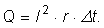

Numim energie electrică energia de interacţiune a sarcinilor
electrice.
Numim energie electrică energia de interacţiune a sarcinilor
electrice.
Producerea şi utilizarea curentului continuu |
Energia şi efectele curentului electric |
C-1. |
Energia electrică |
Numim energie electrică energia de interacţiune a sarcinilor
electrice.
Instrumentul care măsoară energia electrică pe care o utilizezi în locuinţa ta este contorul electric (figura 1−1).
Figura 1-1. Contor electric.
Unitatea de măsură în care contorul electric înregistrează energia electrică utilizată este kilowattora (simbol kWh):
1 kWh = 1000 W · 3600 s = 3,6·106 J.
 Activitatea experimentală 1-1
Activitatea experimentală 1-1
Investighează câtă energie electrică este utilizată în locuinţa ta. Consultă facturile de energie electrică din ultimul an.
La ce a fost utilizată această energie?
Cât a costat această cantitate de energie electrică?
Când sarcina electrică q traversează un traseu între capetele căruia este tensiunea electrică U, se transferă energia qU (figura 1−2).
Figura 1-2. Transferul de energie la parcurgerea unui traseu între capetele căruia este menţinută o tensiune
electrică.
 Provocarea 1-1
Provocarea 1-1
La capetele filamentului unui bec de lanternă este menţinută tensiunea 4 V.
Câtă energie este transferată pentru fiecare coulomb de sarcină care traversează filamentul?
Dacă o porţiune de circuit este traversată de curent electric cu intensitatea constantă I,
Energia electrică transferată în intervalul de timp Δt
este:
W = q · U = (I · Δt) · U = U · I · Δt.
Provocarea 1-2
Intensitatea curentului prin becul de lanternă de la provocarea precedentă este 250 mA.
Cât este energia transferată într−o oră de funcţionare?
Dacă porţiunea parcursă de purtători de sarcină este pur rezistivă (ca în cazul unui rezistor), întreaga energie este tranformată în căldură. Opoziţia la trecerea purtătorilor de sarcină este datorată doar ciocnirilor acestora cu atomii întâlniţi în cale.
Numim efect Joule transformarea în căldură a energiei electrice
la trecerea purtătorilor de sarcină printr−o porţiune rezistivă de circuit.
Folosind legea lui Ohm, poţi calcula
Cantitatea de căldură degajată la trecerea purtătorilor de sarcină
printr−un rezistor (figura 1−3)
sau:
Figura 1-3. Energia electrica este degajată sub formă de căldură la trecerea purtătorilor de sarcină printr−o
porţiune rezistivă de circuit.
Provocarea 1-3
La capetele unui rezistor cu rezistenţa electrică 1 Ω este menţinută tensiunea 10 V. Rezistorul este cufundat într−un calorimetru în care se află 0,5 L apă.
În cât timp te aştepţi ca temperatura apei să crească cu un grad Celsius?
Într−un circuit, cum este cel al unei lanterne, alcătuit din baterie şi un rezistor, suntem interesaţi cât de eficient este transferată rezistorului energia electrică furnizată de sursă. Randamentul transferului este:
Într−un circuit ca cel din figura 1−3, randamentul transferului este:
Randamentul transferului de energie de la generator la rezistor creşte dacă raportul scade (rezistenţa internă a generatorului este cât mai mică în comparaţie cu rezistenţa rezistorului).
Energia degajată sub formă de căldură (prin efect Joule) pe rezistenţa internă a generatorului este:

În regim de scurtcircuit, R este aproape zero, astfel încât randamentul transferului devine aproape zero. Practic toată energia electrică furnizată de generator se transformă, prin efect Joule, în căldură degajată în interiorul generatorului: